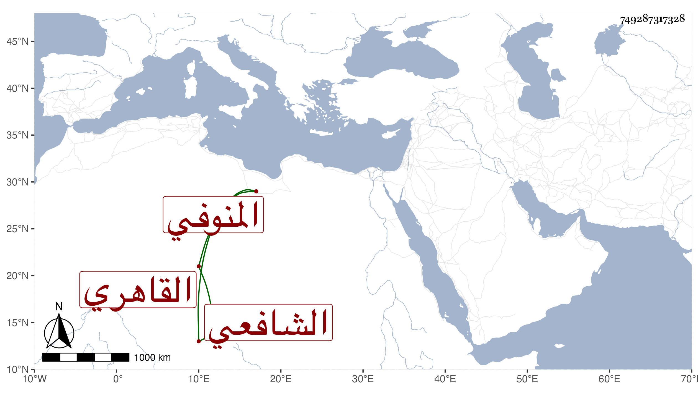

0902Sakhawi.DawLamic.ITO20230111-ara1.EIS1600.749287317328
Biography ID: 749287317328
697
محمد بن محمد بن محمد بن محمد بن إبرهيم العز بن الشمس المنوفي القاهري الشافعي الماضي أبوه . حفظ القرآن والتنبيه وغيره وقرأ على العلم البلقيني في التدريب وغيره وناب في القضاء عنه فمن بعده . وجلس بحانوت باب الشعرة وقتا بل ناب أيضا في منوف وإبيار والأعمال المرصفاوية والخانقاه السرياقوسية استقلالا بل شارك في الأخيرة عنده واستقر في التدريس بناصريتها السرياقوسية وكذا بالسودونية من عبد الرحمن المعروفة بالدوادارية منها لكن شريكا لغيره وسافر قاضي المحمل مرارا ولم يكن بأهل لكل ذلك ولا كان محمود السيرة وإنما كان ترقيه لملازمته خدمة الزين الأستادار واختصاصه به بحيث كان يركب نفائس الخيل . مات في مستهل صفر سنة خمس وسبعين عفا الله عنه .
